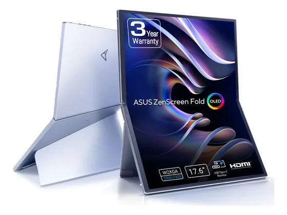

ViewSonic VA1655 : avis, tests et prix
Le verdict en une phrase. Un écran portable bien équipé : deux USB-C avec recharge 60 W, mini-HDMI, haut-parleurs et joystick de menu. Un peu plus épais que la moyenne.
N° 7 sur 10 dans le top 10 Écrans PC portable.

Pour qui ?
Vous branchez aussi bien un portable qu'une console et voulez la recharge et le son intégrés.
Vous cherchez le modèle le plus léger.
Le consensus de la presse
Sur 3 notes, 1 atteint ou dépasse 8/10. La plus haute : 8,9/10 (PC Magazin) ; la plus basse : 6,0/10 (PCWorld).
Où l'acheter
La configuration peut différer d'un marchand à l'autre : vérifiez la fiche avant d'acheter. Seuls les liens Amazon sont affiliés à ce jour ; les autres sont de simples liens directs. Aucun n'influence les notes ni le classement.
Tous les tests recensés
Chaque ligne renvoie vers le test d'origine. Les notes sont converties sur 10 ; « test » signale un article sans note chiffrée. Notre méthode.
- PC Magazin8,9
- PCWorld6,0
- Tom's Hardware6,0
- MonitorNerdstest
Les alternatives pour le même usage
Tout le top 10 →
Asus ZenScreen Fold MQ17QHUn grand écran OLED de 17,3 pouces qui se plie en deux pour le transport : unique et spectaculaire, mais très cher et encore perfectible. N° 8 · L'antibactérien Asus ZenScreen MB16ACVUn ZenScreen à traitement antibactérien et béquille intégrée, compatible USB-C et USB-A : pratique pour un usage partagé au bureau ou en classe.
Asus ZenScreen MB16ACVUn ZenScreen à traitement antibactérien et béquille intégrée, compatible USB-C et USB-A : pratique pour un usage partagé au bureau ou en classe.
Questions fréquentes
Que pense la presse de l'écran ViewSonic VA1655 ?
La note presse moyenne est de 7,0/10, calculée sur 3 notes (de 6,0 à 8,9/10). Un écran portable bien équipé : deux USB-C avec recharge 60 W, mini-HDMI, haut-parleurs et joystick de menu. Un peu plus épais que la moyenne.
Quels sont les points faibles relevés par les tests ?
Contraste et couleurs modestes ; Plus lourd que certains rivaux.
À qui s'adresse le modèle ViewSonic VA1655 ?
Vous branchez aussi bien un portable qu'une console et voulez la recharge et le son intégrés. À éviter si : vous cherchez le modèle le plus léger.
Où l'acheter, et à quel prix ?
Comptez environ 210 € (prix indicatif constaté en octobre 2026). Nous l'avons trouvé en vente chez Amazon. Les prix changent vite et la configuration peut différer d'un marchand à l'autre : seul le prix affiché par le marchand fait foi.